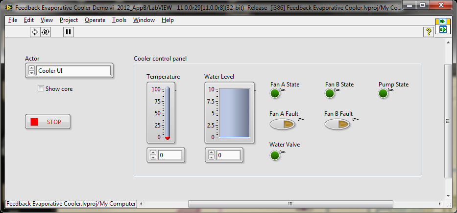

LabVIEW 2012
Software - LabVIEW
Hardware - None
This project uses the Actor Framework to implement an evaporative cooler, with a main VI to handle the user interface and independently running VIs that control the cooler, including the fans and water level. Each independent VI has the ability to pass command-like messages to the main VI and receive such messages from the main VI. The architecture supports expansion for including more independent VIs, statically or dynamically.
This project implements a full application, controlled and monitored by a user interface. There are also independent tasks that are continuously running. These tasks can be messaged from the UI and are capable of sending messages back to the UI. The entire system is built using the Actor Framework (AF), which evolved from the Queued Message Handler (QMH) architecture.
Whereas the purpose of the QMH is to receive and process messages, the purpose of the AF is to create multiple QMHs running simultaneously with well-defined communication paths between them. Within the AF, one actor is the root actor of the application. It spawns as many nested actors as it needs for its work. Each of those nested actors may spawn further nested actors of their own. By default, each layer is capable of communicating only with the actor above it (called the caller actor) or its own nested actors. On the small scale of two or three actors, these clean lines of communication protect against shutdown-ordering problems. As the number of actors scales up into the hundreds, the structured communication paths keep the system manageable.
The top-level VI to run is Feedback Evaporative Cooler Demo.vi. Before running the VI, select "Cooler UI" on the control labeled Actor. You can optionally show the actor's front panel by ticking the "Show core" checkbox. In this example, showing the actor's front panel is only useful when the Cooler UI actor is invoked. You can choose to invoke other actors instead of the Cooler UI to better understand how all the actors fit together.
Once the Cooler UI actor has spun up, the cooler control panel monitors temperature, water level, and fan states. The controls are interactive, so you can adjust the temperature or water level, for example, to see the fans or valve activate. The deadband temperature and water level ranges are 70-75 and 5-7, respectively. You can also fail one of the fans to see the other fan activate.

Read the available document "Using The Actor Framework in LabVIEW.pdf" for more information on the framework itself.
The framework and all of its docmentation assumes you are familiar with LabVIEW Object-Oriented Programming.
This project is a full application, with all the startup and shutdown logic that a full application should be aware of.
The framework is designed to handle truly parallel tasks. This is one of the hardest aspects of programming in any language. G makes writing such programs relatively easy, but it is also easy to get lost in the complications. The Actor Framework tries to bring some order to the chaos by enforcing the Task Tree pattern, where there is a single root actor that spawns nested actors. You can contrast this with something called the Observer pattern, a common design pattern for parallel tasks, where the actors form a web of interconnections, with each actor listening for particular messages from other actors. The web is definitely more flexible, but with increased flexibility comes some instability. For example, in a web, it is much harder to figure out who should go first in a shutdown sequence, whereas it is much easier to define priorities with a tree. You can find a very powerful implementation of the Observer pattern, capable of supporting actors even on network machines, here on the LAVA web site. Information about design patterns in G generally can be found here.
Exercise all elements of the user interface to see the fans, valve, and pump are activated based on temperature and water level. Ensure all actors shut down properly after pressing "Stop".
Any suspected bugs or issues with this framework should be reported using the standard ni.com forums. For feature requests and to find variations, expansion packs and other community comments, please visit the Actor Framework's own community forum page.
Copyright
© 2012 National Instruments Corporation. All rights reserved.
For copyright notices, conditions, and disclaimers, including information regarding certain third-party components used in LabVIEW, refer to the Copyright topic of the LabVIEW Help.
Trademarks
LabVIEW, National Instruments, NI, ni.com, LabVIEW, the National Instruments corporate logo, and the Eagle logo are trademarks of National Instruments Corporation. Refer to the Trademark Information at ni.com/trademarks for other National Instruments trademarks.
Patents
For patents covering the National Instruments products/technology, refer to the appropriate location: Help»Patents in your software, the patents.txt file on your media, or the National Instruments Patent Notice at ni.com/patents.